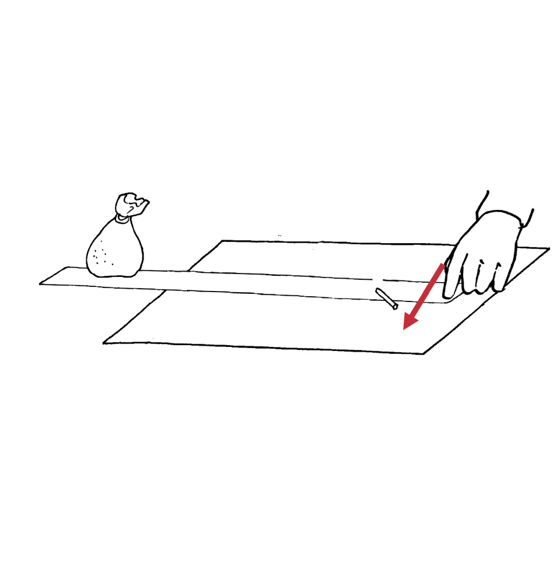
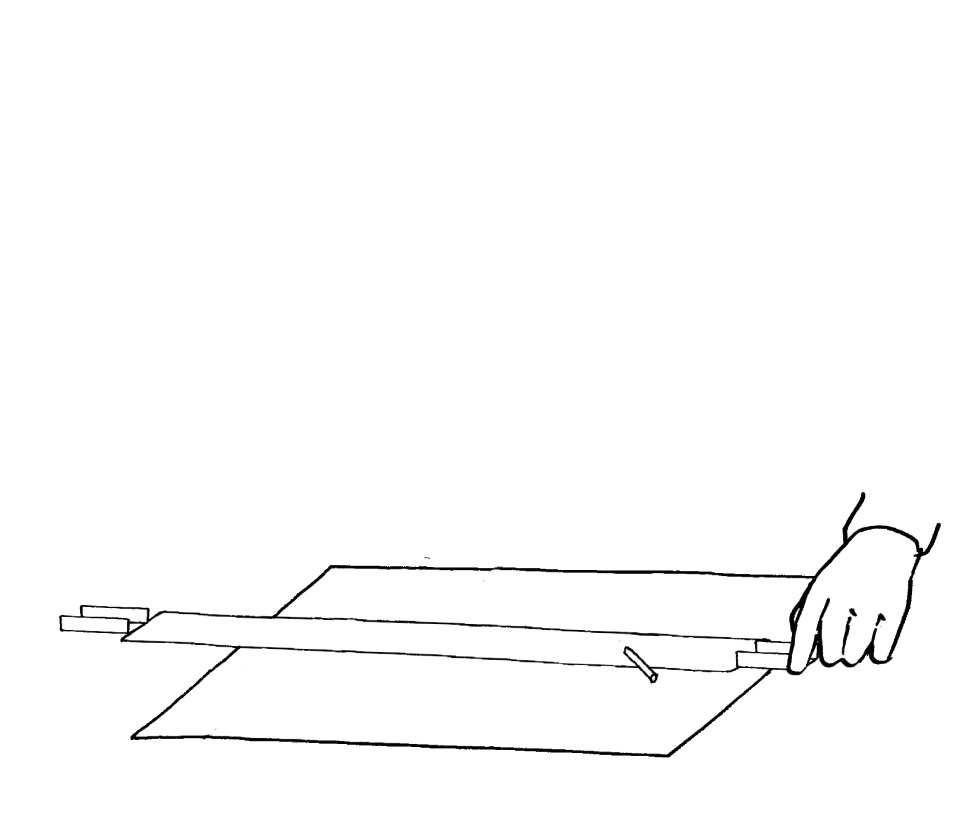
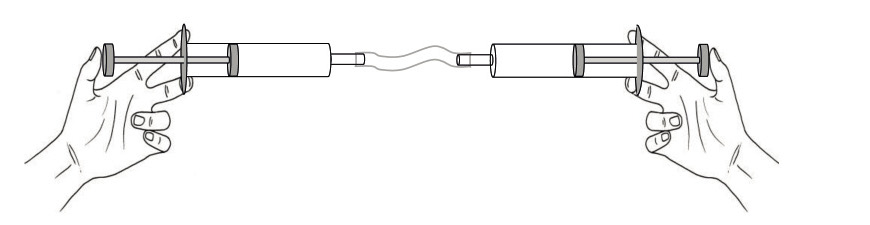
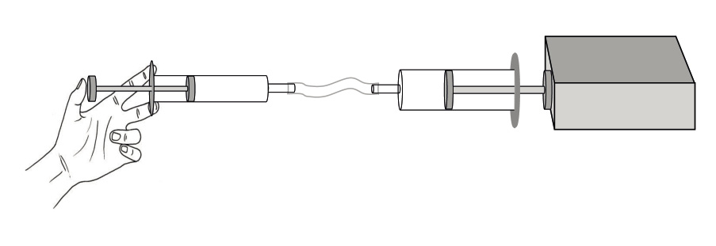
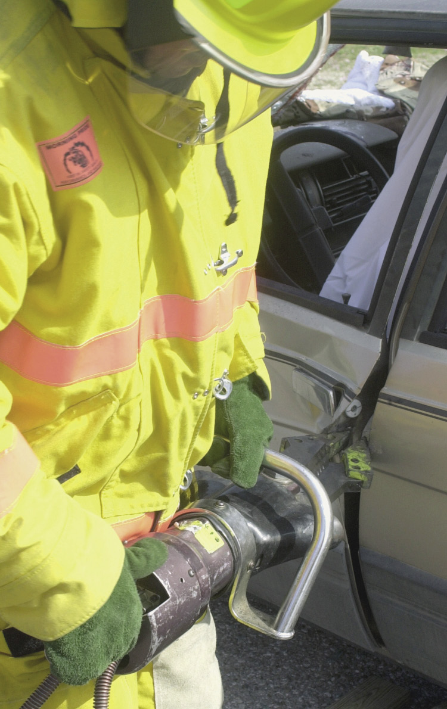

In this chapter, you will learn what Technology is about. You will learn about natural and man-made materials, about tools, and about the design process.
1.1 Materials, tools and plans 4
1.2 Design a wheelbarrow 9
 Figure
1
Figure
1

Figure 2: Transport technology 150 years ago
Figure 3: Modern transport technology
1.1 Materials, tools and plans
Figures 4 to 7 show different techniques to build houses, the tools we use to build them and other kinds of activities that fall under the term Technology. Look at the pictures carefully and try to understand what happens in each picture. When you answer the questions on page 7, you should already have some idea what technology is about.

Figure 4
The person shown above is using grass to cover his roof. Grass is a natural material. It grows in the veld. Some types of grass are much better for roofs than other types. It is not easy to make a thatched roof. Only a few people have the skills to do it properly.
Figure 5: Some of the tools people use to make thatch roofs.

Figure 6
The people in the picture above are using corrugated roof sheets to cover their roof. Metal roof sheets don't occur in nature like grass. People make roof sheets from two metals named iron and zinc. The iron and zinc is obtained by heating crushed rock to separate the metal from other substances. Roof sheeting is a man-made material.
Natural materials are changed in different ways to make man-made materials.

Figure 7: An open mine where rock that contains iron is collected, like at Sishen.

Figure 10: House C

Figure 8: House A
Figure 11: House D
Figure 9: House B
Homework
1. (a) What material is being used to build the house in Figure 8?
(b) Is this a man-made material or a natural material?
(c) What tools are used by the people building the house in Figure 8?
2. (a) What material is being used to build the house in Figure 9?
(b) Is this a man-made material or a natural material?
(c) What tools are being used by the people building the house in Figure 9?
3. (a) What material is being used to build the house in Figure 10?
(b) Is this a man-made material or a natural material?
(c) What tools are being used by the people building the house in Figure 10?
4. (a) What material is being used to build the house in Figure 11?
(b) Is this a man-made material or a natural material?
(c) What tools are being used by the people building the house in Figure 11?

Two girls, Sarah and Tebogo, walk in the veld and climb up a small hill. Suddenly, a rock comes loose and starts rolling down the hill. It lands on Sarah's foot, which gets caught underneath the rock. Tebogo tries to lift the rock, but it is too heavy for her. She looks around and finds an iron pole. She tries to lift the rock with the iron pole and it works! Sarah now manages to pull her foot out from underneath the rock.
Tebogo was not strong enough to lift the rock, she used a tool. Tools help us to do things that we cannot do with our bodies alone. There are other examples of tools, like the ones below.
- • Spoons, knives and forks are used to eat with.
- • We use scissors to cut cloth or paper. This works much better than tearing cloth or paper with our hands.
- • We use cellphones to talk to people that are far away from us. Cellphones are tools for communication. Two hundred years ago, there were no cellphones or landline phones. At that time, people could only talk to each other when they were close enough to hear each other without using any tools.
- • Doctors and nurses use a variety of tools to treat people who are sick.
Some tools are easy to use, like knives, forks and spoons.
Some tools are a bit more difficult to use, like scissors and screwdrivers.
Some tools are even more difficult to use, like a powerdrill. A person who wants to use tools like that must be trained.
About 50 years ago, when your grandparents were children, nobody had cellphones. There were no television sets in South Africa. Also, most roads in South Africa were gravel roads. Tarred roads were only found in and around big cities. Most schools didn't have electricity either.
Two hundred years ago, the world was very different. Electricity had not yet been invented. People travelled on foot, on animals or in carts and wagons drawn by animals. Ships were powered by people who rowed, or by sails which harnessed wind energy.
All people use tools, man-made materials and machines of some kind. Nowadays, people do much less with their bare hands and make much less use of natural materials than in the past.
People who are trained to work with special tools are called technologists.
Technologists find jobs much more easily than people with no training in Technology.
Something to think about
In a certain small town, people get their water from a dam about 3 km away. Then something very unfortunate happened. The dam wall broke during a flood, and it will take at least two years to build a new dam wall. Fortunately, there is an old well near the town, with enough water for all the people. But the well is very deep and at the moment there is no way to get water to the surface. The town is also in a rural area with no electricity.
What do you think can be done to get the water out of the well? Are you sure your plan will work? Can you make a drawing so that other people will understand your plan?
Sibu communicated the plan to his father.
- • investigate,
- • design or, in other words, make plans,
- • evaluate their designs, and often change them,
- • make the things they have designed,
- • evaluate the things they have made, and
- • communicate their designs to other people.
This is sometimes called the design process. You will often work like this during the year.

1.2 Design a wheelbarrow
Be part of a story
In this lesson, you will play an important part in a story. The story is about three people:
- • Mrs April, who grows vegetables and then sells it at a street market,
- • you, and
- • Mr Sethole, a carpenter. He works mainly with wood, but can also work with metal sheets.
Figure 12: A carpenter is a kind of technologist, and makes things out of wood.
Mrs April needs a wheelbarrow to take her vegetables to the street market. She doesn't like the wheelbarrows in the shops. She asks you to go to Mr Sethole and ask him to make a wheelbarrow for her. You take the message to Mr Sethole and he says to you:
"You will have to give me more information so that I can know how to make the wheelbarrow. Wheelbarrows are used for different purposes and they can be of different sizes and shapes. Please ask Mrs April some questions and then come back to me with more information."
Almost any technology project starts with the gathering of information. Without good information, it is not clear what has to be done. This part of the design process is called investigation.
A wheelbarrow that Mrs April can buy in the shop looks like the one on the right. She says this wheelbarrow will not work well for her vegetables.
Figure 13
1. Write down some questions that you can ask Mrs April.
2. Try to think what answers Mrs April might give to your questions. Then write a short note below explaining what she wants to do with the wheelbarrow, and what the wheelbarrow should look like.
The description of what the wheelbarrow should look like is part of the specifications for the wheelbarrow.
The notes that you are writing here is sometimes called a design brief.
3. Mrs April wants to put vegetables next to each other, rather than on top of each other. How should her wheelbarrow differ from the wheelbarrow you can buy in a shop?
You are designing a wheelbarrow for Mrs April, not for somebody else. So you should consider what she will use it for.
Mrs April has an old wheelbarrow without a top. Mr Sethole says he can make a new top and fix it to the old wheelbarrow.

Figure 14
4. Make a sketch below to show what you think the new top should look like.
5. Which materials can be used to make the wheelbarrow's top? Describe the options and say which one you prefer. Also explain why you prefer this material.
You are still busy designing a wheelbarrow for Mrs April. At this stage, you should think about possible materials so that you can select suitable materials for making the wheelbarrow.

Next week
During the next two weeks, you will learn to make different types of drawings. Drawings will help you to think about things you may make, and to share your ideas with other people.
Sketching and drawing are very important skills in Technology. They allow us to share our ideas, designs, and technical solutions with other people. In this chapter, you will learn what the main purpose of graphics are. You will also learn about the different meanings of thick and dark lines, thin and feint lines, and dashed lines. And you will learn a little bit about scale and how to show sizes on drawings. But the most important thing about sketching and drawing is that you need to practise. So in this chapter you will learn how to do some simple sketches and how to do a flat drawing showing sizes.
2.1 A new cupboard for the classroom 16
2.2 Different types of lines in drawings 18
2.3 Free-hand sketching 22

Figure 1
Figure 2: Drawings in a shoe design studio
2.1 A new cupboard for the classroom
Your classroom needs a cupboard to store books.
1. How many doors should it have?
When you answer these questions, you are writing design specifications for the cupboard. Whenever you plan to make something, it is useful to first think about what you want to make, and to write your ideas down. You can then give your design specifications to someone else to read. That person will maybe make some useful suggestions that will improve your design. Without written design specifications, it is very difficult to get good suggestions from other people.
2. How many shelves should it have?
3. What should it be made of?
4. How high and how wide should it be?
5. How deep should it be?
6. Make a rough sketch in the space below to show what you think the cupboard will look like.
7. Make a bigger and better sketch of the cupboard. Write notes next to your drawing to show where the doors and shelves are. Also write notes to say how big different parts of the cupboard should be, in millimetres (mm).
The lengths of different parts of an object are called the dimensions. Things like the height, width and depth of the cupboard, as well as the distance between the shelves, are called the dimensions.
8. Should the real cupboard be three times bigger than your drawing?
A real object is often several times bigger than a drawing of it. If the object is five times as big as the drawing, we say the scale of the drawing is"1 to 5". This is written as "1:5".
9. How many times bigger should the real cupboard be than your drawing?

2.2 Different types of lines in drawings
In this drawing, a dashed line is used to show the footinside the shoe.

Figure 4
dashed line
Dashed lines are used to show things that are hidden, like the foot that is inside this shoe.
1. Use dashed lines to show the bodies of the two people in the car below.

Figure 5
2. Draw dashed lines on the drawing of a cupboard on the next page to show four shelves inside.
A drawing like this is called a working drawing. A working drawing is an accurate drawing that shows the real sizes.
Solid lines are used to show the visible edges of objects on drawings.
When you want to show something that is behind something else, you should use a dashed line. Dashed lines are used to show hidden objects.
Just like you use a language such as English to communicate with others, sketches and drawings are a "language". And just like English, drawings have rules to help us understand them better. These rules are known as "drawing conventions".
Sizes, which can also be called dimensions, are shown with a thin dimension line with arrows at both ends. They are drawn a little bit away from objects.
Short extension lines, which do not touch objects, show you what is being measured.
Dimensions are normally given in mm. It is therefore not necessary to write "mm" after the number indicating a dimension on a drawing.
900
1 200
Figure 6
 Figure 7
Figure 7
Working drawings are used to design things according to exact sizes. Designers communicate the exact sizes of each part of an object in working drawings, so that each part fits to make the final product work properly. For example, a bicycle pump can't have a push rod that won't fit inside its outer tube. See Figure 8 below.
By looking at some drawings and practising to sketch, you have learnt to:
- • Use thin feint lines for guidelines, such as the lines for a guide box.
- • Use thick lines to show the outside edges of an object, such as the edges you can see from the front.
- • Use a solid line to show these edges.
Homework: Study drawings of a bicycle pump
nozzle


outer tube 180 long
push rod

handle
Figure 8
1. Name the parts of the pump shown in this sketch.
2. How long is the outer tube of this bicycle pump?
Sketching and drawing are important ways of recording and communicating ideas.
For designers and technologists, sketching is like taking notes. It reminds them of their ideas and helps them to share these ideas with others. Sketching is usually done without any instruments. All you need is a pencil and some paper.
3. How long is the push rod? How do you know that?
Look at the drawing of a different bicycle pump below. This drawing is accurate, so we call it a scale drawing. It is four times smaller than a real pump. We say it is drawn to a scale of 1:4. That means that if you measure the length of the outer tube of this drawing, it will be four times smaller than the outer tube of the real pump.

320
Figure 9: Bicycle pump. Scale 1:4
4. Why is the outer tube of this pump drawn with solid lines?
5. What other part of this pump is drawn with solid lines?
6. Why is part of the push rod drawn with dashed lines and other parts with solid lines?
7. What type of line shows how long the outer tube is?
8. How long will the outer tube of the real pump be?
9. Use the scale on the drawing to find out how long the handle will be on the real pump.
10. Now draw a dimension line on the pump drawing to show how long the handle will be.
11. Name three different types of lines that you can see on the drawing.
12. What is the scale of the working drawing of the cupboard three pages back? You will have to take measurements to find out what the scale is.

2.3 Free-hand sketching
Figure 10
The artist who drew the foot in Figure 10, first drewonly light thin lines, like the ones shown on the right.
She then used these feint lines as guidelines to draw the foot.
Figure 11
Sketching lines
1. Sketch a rectangle with rounded corners.
- • Your drawing should be about two times as big as the drawing on the right. It is drawn to a scale of 3:1.
- • Sketch a guide box. Do not use a ruler. Use light guidelines.
- • Mark the corners with feint lines.
- • Make the corners round.
-
• Now make
the outline thicker.
Figure 12

Homework
2. Sketch a triangle with rounded corners.
- • Your drawing should be about three times as big as the drawing on the right.
- • Sketch a rectangular guide box without a ruler.
- • Mark the centre of one side at B, and sketch lines to the opposite corners.
- • Round the corners as you did for the rectangle.
-
• Make the
outline of the triangle with rounded corners thicker.
B
Figure 13
3. Sketch a circle.
- • Your drawing should be about four times as big as the drawing on the right.
- • Sketch a square guide box. Do not use a ruler.
- • Sketch lines from one diagonal corner to the other.
- • Mark off the positions C of the centre of each side.
-
• Mark
points D on the diagonals, halfway between the centre and
each corner.

Figure 14
- • Mark points E halfway between the Ds andthe corners.
- • Sketch a curved line to join up the C's and the E's; C-E-C-E-C-E-C-E.
- • You have sketched a circle. Now make the circle's outline thicker.
4. A drawing of a bicycle pump is shown on the next page. Make an accurate 1:4 scale drawing of the pump on the grid paper below.
Note the following:
- • The grid shown below has 5 mm spacing between lines.
- • Use a ruler and make sure you remember the different line types.

To scale down means to make a drawing smaller than the actual object.
To scale up means to make a drawing bigger than the actual object.

180
nozzle
outer tube
70

push rod

handle
Figure 15: A bicycle pump
5. The drawing at the bottom of the page shows the front view of a house. Make a bigger drawing of the front view of this house.
Note the following:
- • The 6 m length of the real house should be 60 mm on your drawing.
- • Show the height of the side wall using a dimension line on your drawing.
- • Show the height to the top of the chimney.

Front view of house

Figure 16
6 m
Next week
Next week, you will learn how to make drawings that show more than one side of an object.
In this chapter, you will learn how to make two types of drawings. Drawings help us to show others what our ideas look like. Drawings also help us to evaluate our ideas, to become aware of problems and to develop solutions.
3.1 Two types of drawings 31
3.2 3D oblique drawing 33
3.3 Perspective drawing 39
 Figure 1
Figure 1
Figure 2 (Drawing A)
Figure 3 (Drawing B)
3.1 Two types of drawings
1. Look at drawings A and B again. Do you see drawings of two different tables, or two different drawings of the same table? Take your time and think carefully before you answer.
2. Look at drawing A and drawing B on the opposite page. Also look at drawing C and drawing D on the next page. Is drawing C or D the same as drawing A, only smaller? Explain why you say so.
3. How do drawings A and B differ?

Figure 4: A perspective drawing (Drawing C)
Figure 5: A 3D oblique drawing (Drawing D)
In the next lesson, you will make 3D oblique drawings.

3.2 3D oblique drawing
Make a 3D oblique sketch
You can make a good 3D oblique sketch of a stove if you follow the instructions given below.
It is easier if you first draw a box that shows the shape of the stove. Do that on the next page. Do not use a ruler.
To draw a box, first draw a rectangle to show the front of the box, as shown in step 1 below. Draw the rectangle in the left lower part of the page.
Draw another rectangle of the same size as shown in step 2 below. Then draw sloping lines as in step 3 to show the edges of the box that go from the front to the back.
Figure 6

step 1 step 2 step 3
Figure 7
Make your 3D oblique sketch on this page. Make it big.
Change your box into a stove

Figure 8
Now see if you can change your box into a stove. Here are some tips:
- • The plates on top of a stove are circles. On a drawing like this, they will be squashed circles (ellipses).
- • The circles for the knobs are real circles. This is because everything on the front of the drawing is the same as it is in real life.
- • Look at how the handle is drawn. It comes out of the front face. To do this, use sloping lines coming forward.
- • Make all lines that you can see on the objects thick.
Something to do at home
3D oblique drawings are easier to make on grid paper, like the one on the next page. Make a better drawing of the stove on the grid paper. One of the sloping lines is already drawn.

Accurate 3D oblique drawing
The drawing below is an accurate oblique drawing of the stove.
1. Write down the length, height and breadth of this stove.
2. Now measure the length, height and breadth on the drawing with a ruler.
3. What do you notice about the breadth line? Is it drawn to the same scale as the length and height lines?
850


565


600
Oblique viewStoveScale 1:10

Figure 9
A few important things about oblique drawings
4. Use the grid on the previous page to make an accurate 3D oblique drawing of the stove, with scale 1:5.
In 3D oblique drawings, all lines in the breadth are parallel, as shown above.

3.3 Perspective drawing
When we see something far away, it looks small. When you are close to an object, it looks big.

Figure 11
When you make a 3D drawing that shows things getting smallerin the distance, it is called a perspective drawing.
Look at this sketch of a fence. It has been drawn going back into the distance.
_fmt.png)
Figure 12
Use the steps below to draw the fence on the next page
1. From the bottom left-hand corner of your page, draw a fence post. This will be the tallest post because it is the closest to you.
2. In the top right-hand corner of the page, draw a point. This point is called the vanishing point (VP). It represents a distance so far away that you can no longer see how tall something is.
3. From the top of the front post, draw a thin guideline to the vanishing point (VP). You can use a ruler for this.
4. From the bottom of the front post, draw another thin guideline to the vanishing point.
5. Draw a second post behind the first. The bottom of this post must start at the bottom guideline and it must stop at the top guideline.
6. Carry on drawing more posts going backwards into the distance.
7. Keep in mind that the posts will look as if they are getting closer and closer together.
8. Now add some crossing lines to represent fence wire.
Draw the fence on this page.

Draw a matchbox in perspective
In the bottom left-hand corner of this page, draw a rectangle to represent the front of the matchbox. Part of the rectangle is already drawn for you.
From each corner of the rectangle, draw a thin guideline to the vanishing point. You can use a ruler.

Figure 13
Moving back along the guideline from the vanishing point, mark off a point (B1), which makes the breadth of the matchbox look right.
From this point (B1), draw a vertical line down to the bottom guideline. This is the side edge at the back of the matchbox.
From the same point (B1), draw a horizontal line towards the left hand guideline. This will represent the top edge at the back.

Figure 14
Perspective drawing with texture and shading
Look at the open matchbox shown. Thick and thin lines have been used to make the edges stand out. Try to do this on the matchbox you have already drawn, or on a new drawing.
Figure 15
Draw an open matchbox using single vanishing point perspective in the space below.
Add more shading, and even colour
When a surface is flat, the whole surface looks as if it is the same colour. But some surfaces look darker than others, depending on where the light is coming from.
To shade a box so that it looks 3D,draw a new box in the space belowand do the following:
Figure 16
- • Colour the front, top and sidesurfaces lightly in one colour. You can use a pencil or a coloured pencil.
- • Choose the face that will be the second darkest. Colour this surface a second time.
- • Choose the face that will be the darkest. If the light is behind the drawing, this will be the front face. Then lightly shade this surface two more times, so the darkest face will have been coloured three times.

Next week
Next week, you will learn about mechanical systems. You will explore how levers work to make it easier to move things.
In this chapter, you will learn about ways in which people manage to do things that they cannot do with their bodies alone.
4.1 Lift things with a lever 47
4.2 Move things without touching them 52
4.3 Do different things with levers 59
 Figure 1
Figure 1
Special projects
If you have time to spare in class or at home, give one or more of these activities a try:
1. Build a working model of the water lever on the next page. If you can make it in the next two days, you can use it in lesson 4.3.
2. Look carefully at the coloured diagrams on the next page. Try to see what properties of levers can be seen in the diagrams. Write captions for the drawings that explain what they show.
4.1 Lift things with a lever
In the pictures below, Tom tries to lift one side of a block of concrete with a lever. The pictures show three different ways in which he can try to do so.
1. Which way do you think will work best, and why do you think so?
The lever rests on a small stone and will turn on the stone. When Tom pushes the one end of the lever down, the other end pushes the concrete block up.

method 1
method 3

method 2
Figure 4
2. Describe what is different about the lever in each of the three cases.
Join two classmates and work with a lever
You need three things for this activity:
- • a stick of about 30 cm long, that can be used as a lever,
- • a brick or a stone about the size of a brick, and
- • something on which the lever can be supported.
Now do the following:
Use the stick as a lever to lift one side of the brick.
Figure 5
Take turns to use the stick as a lever to lift the one end of the brick. Do it with different positions of the fulcrum, so that you can answer the question below.
3. When does the lever help you most? Is it when the fulcrum is close to the brick or when it is far from the brick?
If you did not do the above, do this:
Put your pencil against the edge of a book and try to lift the one side of another book up, as shown in the picture below.
Figure 6
Do this with the edge of the book on the left in different positions below the pencil.

Figure 7
4. In which position of the fulcrum does the pencil give you the greatest "advantage" for lifting the book?
In this case, the word advantage means that the lever makes it easier for you to lift the object.
Some words that may be new to you, or are used in a new way, are printed in quotation marks, for example "advantage". This is to tell you that you may not immediately understand the word, but you will learn what it means as you continue.
Scientists and technologists use the words "mechanical advantage" when referring to this. In the pictures below, the lever gives you a greater mechanical advantage when the fulcrum is closer to the brick.

Figure 8: Mechanical advantage

Figure 9: Mechanical disadvantage
5. Have another look at Figure 4 of this chapter. Which method gives Tom the biggest mechanical advantage when he uses the lever?
input force
output force
load
Figure 10
When you use a lever to lift an object, the push on the object may be stronger than, equal to or weaker than your input force.
6. Where is the input force, the load and the fulcrum on each of these pictures? Write your answers next to the pictures.
The output force may be smaller than the input force. In this case, technologists say the mechanical advantage is smaller than 1. This is actually a mechanical disadvantage.
The output force may be bigger than the input force.In that case, technologists say the mechanical advantage is greater than 1.
If the output force is equal to the input force, technologists say the mechanical advantage is 1.

Figure 11

Important: something you need to do at home
Bring a box or two pieces of cardboard that are at least as big as an A4 sheet of paper to your next Technology class. You will need this to make a cardboard lever and to do a few experiments.
It helps the environment if you pick up boxes or pieces of cardboard and other trash that lie around in the street, so pick these up and help to keep our streets clean!
4.2 Move things without touching them
A lever can turn around the fulcrum.
We also say the lever "pivots" around the fulcrum.
Figure 12
In the diagrams below, the fulcrum is in different positions.
In each case, state whether the mechanical advantage is bigger than 1, equal to 1 or smaller than 1.

situation A
situation C
situation B
Figure 13
Make a lever with a base
In this activity, you will make a lever that you can use to do a few experiments. Doing the experiments will help you to understand levers better.

Figure 14
1. Mark the fulcrum of the lever in the photograph.
Instead of fulcrum we can say pivot point. It means the same.
If you make your lever from cardboard, you will need the tools and materials below.
|
Tools: |
Materials: |
|
|
2. Before you start, look carefully at the photo on the previous page. Make sure you understand how your lever will work.
Use a strip of corrugated cardboard about 30 cm long and 3 cm wide for the lever. Mark a position for a hole about 4 cm from the one end, in the middle of the width of the cardboard.
You may have construction kits or perforated Masonite available. Use it instead of cardboard for this work. Be careful though and do not limit your opportunities to acquire basic skills by using "easy" materials.

Figure 15
3. Use a sharp pencil to make a hole at the mark.

Figure 16
Safety precaution:
Make sure you do not pushthe pencil into your finger.
4. Make a hole in the sheet of corrugated cardboard, about 8 cm from one end, as shown in the diagram.

Figure 17
This will be the base to which you will attach your lever.
5. You can use a "paper dowel" to attach the lever to the base. It can act as a pivot around which the lever can swing. To make a paper dowel, tightly roll paper around your pencil as shown below.
Figure 18
Once you think it is strong enough, cut off the remaining paper.
The holes that you punched into the cardboard strip and sheet will be rough on the one side and smooth on the other.
smooth side of a punched hole

rough side of a punched hole
Figure 19
6. Put the strip on top of the sheet so that the smooth sides of the holes are between the strip and the sheet. Put your paper dowel through the holes so that it connects the strip with the sheet.

fulcrum
fulcrum
Figure 20
7. Fold the paper dowel over on both sides. Tape it down at the bottom of the support sheet.
fulcrum
Figure 21
Try to use your lever to move the small bag of sand around on your desk.

Figure 22
8. It may not work very well. Think a bit, and then describe how you can improve your lever so that it will work better when you want to move the bag around.
Here are two improvements that you can make to your lever:
- • You can make cuts and fold the card up to form flanges on both sides at each end of the lever. The sketch below shows a piece of paper that is yellow on top and red at the bottom. One cut was made and part of the paper was then folded up to make a flange.
a flange

Figure 23
- • You can add a paper strip that prevents the lever from lifting up.
Figure 24

|
Evaluation and improvement |
Technologists evaluate their work all the time. When they see that something will not work well, they change it to make it work better. When you do your mini-PAT later this term, you will design a device that works with two levers. You will make a working model of your design. When you do that, you should also evaluate your design all the time. Look for opportunities to improve your design and your working model.
You can improve your lever on a base by adding "spacers" to keep the lever some distance from the base.

spacers
fulcrum
lever
spacers
base plate
Figure 25
You can cut the spacers from the same cardboard that you used for the lever.
You can glue them to each other and to the lever. It may even be better if you add spacers at the fulcrum too. You will have to cut holes in your spacers, so that the peg or dowel can pass through the holes.
Round spacers with holes in the middle are called washers. Washers are often used when things are tied together with bolts and nuts.
 Figure 26
Figure 26
4.3 Do different things with levers
Change direction of movement
Levers can be used for reasons other than to gain a mechanical advantage. When you sweep the floor with a broom that has a long handle you use the broom as a lever. The long handle makes it possible to sweep over a large area while moving your hands only for a short distance. In this case the lever (the broomstick) gives you a distance advantage, although there is no mechanical disadvantage.
Levers also change the direction of movement. If you push the one end of the blue lever below down, the other end moves up.
Figure 27
 Figure
28
Figure
28
In the above case, the output movement is in the opposite direction than the input movement. Linkages and guides can be used, as shown in the diagram below, to control the change of direction of movement caused by a lever.
The blue bar on this diagram indicates a lever that pivots around point O. The yellow bar is a rod that can be used to push end A of the lever. The red bar can only move between the two black strips. The black dots at A and B indicate linkages (for example dowels that fit loosely in holes), around which the yellow, blue and red rods can pivot.
If the yellow rod is pushed in the direction of the blue arrow, in what direction will the red rod move? Make an arrow on the diagram to show the direction.
If you wish, you may build a system like this from cardboard.

Figure 29
A
B
Evaluate a design
Simon wants to build a device that will help him to lift heavy objects. His idea is to drive one lever with another lever, so that he can have a big mechanical advantage. He made this drawing of his design.
Do you think Simon's design will work?
Write down why you think it will work, or why you think it will not work.

Figure 30
Also suggest how he can improve his design.
Redesign a water lever
How can this lever be redesigned so that it becomes easier to lift a bucket of water?
Next week
In the next chapter, you will learn more about effort and load, and how the fulcrum can be changed around to make other types of levers. You will also learn more about other types of levers.
In this chapter, you will learn about two more types of levers, which are also called classes of levers. In first-class levers, the fulcrum is somewhere between the effort and the load. In the other two classes, the fulcrum is at one of the ends.
5.1 The three classes of levers 63
5.2 Practical examples of different classes of levers 66
5.3 More practical examples of different classes of levers 69
Figure 1
Figure 2: These pictures show two corrugated cardboard sheets of about 20 cm long and 10 cm wide. The one piece has the corrugations over the width, and the other piece has the corrugations over the length.
Figure 3: Both pieces are folded in the middle to form springs. The edges are folded to form flanges.


5.1 The three classes of levers
Lift your finger in three different ways
Put your pencil on the desk in front of you.

Figure 4
Press the pencil down in the middle with right index finger, now try to lift your index finger by lifting the pencil at the sharp end with your left hand, as shown below. When you do this, the pencil acts as a lever.
Figure 5
1. The fulcrum of the lever is at the right end of the pencil, where it rests on the desk. Mark the input force with an arrow on the sketch above. Where is the load?
2. In Figure 5 the input force is at one end of the lever, and the fulcrum at the other end. How is a first-class lever different from this?
Press the pencil down at the sharp end with your right index finger, and try to lift your finger by lifting the pencil in the middle with your left hand, as shown below.

Figure 6
3. The fulcrum of the lever is at the left end of the pencil, where it rests on the desk. Mark the effort with an arrow on the sketch above. Where is the load?
4. In the above case, the load is at one end of the lever, and the fulcrum at the other end. How is the situation on the previous page different from this one?
You used the pencil as a third-class lever in the above case. On the previous page, you used the pencil as a second-class lever.
To use the pencil as a first-class lever, you need to add support somewhere between the two ends to act as a fulcrum.
Figure 7
load
input force

5. Do the experiments on the previous two pages again. When do you get the biggest mechanical advantage: when you use the pencil as a second-class lever or when you use it as a third-class lever?

input force  load Figure 8
input force load Figure 9
load input force Figure 10 |
5.2 Practical examples of different classes of levers
This boy will swing the hammer to hit the nail into the wall.
effort
effect
fulcrum
Figure 11
In this situation, his forearm and the hammer together form a lever. The lever swings around the elbow, so the elbow forms the fulcrum.
1. Is his forearm and the hammer a first-class lever, a second-class lever or a third-class lever?
2. Can you think of a sport where a person swings an object to hit something?
3. Rest your right elbow on your desk, then pick up something with your right hand while keeping your elbow on the desk.
Do it again, but this time hold your left hand lightly on your right arm, just above the elbow.
Do you feel the muscle movement inside your arm?
 Figure 12
Figure 12
The diagram below explains how your arm works.
load
fulcrum
input force
Figure 13
4. In each of the pictures below, draw a small triangle to indicate where the fulcrum is, and an arrow to indicate where the input force is. Make a letter L to show where the load is. Also state in each case what class of lever it is.
(a) kitchen tongs

(b) man pressing down mechanical tyre lever on stand
(c) another kind of kitchen tongs
Figure 14

5.3 More practical examples of different classes of levers

fulcrum
load
input force
Figure 15
When you use a wheelbarrow, the axle of the wheel is the fulcrum and your arms provide the input force. The load is between the fulcrum and the input force. This is how a second-class lever works. The nutcracker below is also a second-class lever.
An easy way to remember how a second-class lever works, is to think of a wheelbarrow or a nutcracker.

Figure 16: A nutcracker
Make a lever on a base plate
Use corrugated cardboard to make a lever on a base plate, as shown on this scale drawing. The scale of the drawing is 1:3.
Figure 17
For the lever, the corrugations must have the same direction as the length of the lever. Use a strip of cardboard 6 cm wide, and fold up the edges along the length to form flanges as shown on the right.

Figure 18
You can use this lever to move a small box filled with sand. You can do this in two ways: by using the lever as a second-class lever or by using the lever as a third-class lever.
1. Make free-hand sketches to illustrate the two ways in which your lever can be used.
2. Use your lever and sandbox to investigate when you get the biggest mechanical advantage, with a second-class lever or with a third-class lever. Write a brief report below.

Next week
In the next chapter, you will investigate and learn how levers can be linked, and how they can be used for a variety of purposes.
In this chapter, you will learn how levers are combined to make different tools.
6.1 Pairs of first-class levers 73
6.2 More tools with levers 77
6.3 Many levers in one device 80

Figure 1: A set of pliers consists of two levers attached at the same pivot point.

Figure 3
6.1 Pairs of first-class levers
Work with scissors in different ways
First answer the questions below and then do the experiment. Find out which way or method of using scissors works the best. Look at the two methods of using scissors in the pictures below.
 Figure 4 Figure 5
Figure 4 Figure 5
1. What is the difference between these two methods of using scissors?
2. With which method will it be the easiest to cut? Explain your answer.
3. Are there any levers in a pair of scissors? If so, how many, and what kind of levers are they?
4. In diagrams A, B and C below, the input force on the blue blade is indicated with a red arrow in each instance. In diagram A the load on the blue blade is indicated by a black arrow.

Figure 6: A pair of scissors is actually two blades that are linked together so that they work like two levers.
(a) Draw an arrow to show where the load is in diagrams B and C.

A
C
B
Figure 7
5. In which case is the mechanical advantage of the blue lever the greatest, and in which case is it the smallest?
6. In which case, or cases, is the mechanical advantage of the blue lever bigger than 1?

Can scissors cut thick objects?
1. Why will an ordinary pair of scissors not work well to cut the branches of a tree?

Figure 8
2. Make a free-hand sketch of the type of scissors that can cut the branches of trees. Why will it work?
 Figure 9
Figure 9
3. Why will an ordinary pair of scissors not work well to cut a crashed car open to free trapped passengers?
4. Suppose you have to design a cutting tool that can be used to cut through metal. In which ways will this tool be different from an ordinary pair of scissors?

6.2 More tools with levers
What is the best way to crack a nut?
You can use pairs of levers to compress, crush or crack things.

design A design B design C
Figure 10
1. Which class of lever is used in each of these nutcrackers?
2. Quickly draw a hand in each case below to show how you can press the hardest on the nut.
Figure 11
3. Mark and label the input force, load and fulcrum clearly on each of the above drawings.
4. Which of the three nutcrackers do you think will work best? Explain why you think so.
A label is a word or sentence that you write next to a drawing to describe or to name a part of the drawing. When you write one, you are labelling a drawing.
Three different kinds of kitchen tongs and two pairs of pliers are shown on the next page.
5. Describe the differences between type A and type B kitchen tongs.
6. How does type C kitchen tongs differ from types A and B?
7. Which of the three types of kitchen tongs work in the same way as a pair of pliers? Explain your answer.
8. Describe a situation in which a pair of pliers would be useful.
9. Make a free-hand drawing of a pair of levers that can be used to pull out thorns from your foot. This tool is called a pair of tweezers.
10. Which class of lever did you choose for your design in question 9?
11. Make a free-hand drawing of tweezers with a different class of lever than the tweezers in your first design.


kitchen tongs type A
kitchen tongs type B

kitchen tongs type C
Figure 12

type A pliers

type B pliers

type C pliers
Figure 13
6.3 Many levers in one device
Examine and redesign a nail clipper
 Figure 14
Figure 14
A bigger drawing of the nail clipper on its own is shown below, and a schematic diagram of a nail clipper is shown on the next page.
Figure 15
A schematic diagram does not show an object as it really looks. It is drawn to show some parts of the object more clearly than if you were looking at the real object.
1. Look at the red part on the diagram on the next page. It is a lever. What class of lever is it when the nail clipper is used?
2. Show the effort and load on the red lever with arrows and labels. Also show the pivot point with a small triangle and a label.
Figure 16
3. The blue part of the nail clipper is a pair of levers. Are they used as first-class, second-class or third-class levers?
4. Show the effort and load on one of the blue levers with arrows and labels. Also show the pivot point with a small triangle and a label.
5. Is the effort on the lower blue lever the same as the load on the red lever or not? Explain your answer.
6. Can the above design be changed so that the nail clipper could cut harder objects than finger nails, for example pieces of metal? Make a schematic drawing to show how that could be done and explain why it will have a greater mechanical advantage than the design above.

Investigate another combination of levers
The red and blue mechanism consists of two pairs of first-class levers. The pair on the left is used to "drive" the pair on the right.
The four yellow dots show linkages, like the linkages you made with paper dowels when you made levers in the previous two chapters.
Something that is designed to be useful when some of its parts move is called a mechanism.
 Figure 17
Figure 17
1. What do you think is the purpose of this device?
2. Which of the yellow linkages in the drawing are pivots for levers, and which only connect one lever to another? Show this by writing labels on the drawings above.
The word system is used to describe something that consists of several parts that are connected to each other in some way.
The above device can also be described as a system of two pairs of first-class levers.

Next week
In the next chapter, you will design a tool to cut open car wrecks, in order to save people trapped in crashed cars.
This chapter is a formal assessment task. It will count for 70% of your term mark.
It is a good idea to make a few trial designs before you make the final model. There is a lot to find out, to think about, to plan and to prepare before you can even start with a project. For the next two and a half weeks, you will design and make a mechanical tool. You will design it in such a way that it solves a particular problem.
Work alone, and only at school. Your teacher will assess your work.
Week 1
Another way to move objects from a distance 86
Week 2
Scenario 96
Week 3
Make a working drawing 105
Week 4
Complete your model 108
Assessment
Design:
Design brief, specifications and constraints [12]
Rough sketch of Jaws of Life tools, with labels [7]
Oblique drawing of a syringe [6]
Make:
Planning to make [15]
Completed model [20]
2D working drawing [10]
[Total marks: 70]
Week 1
Another way to move objects from a distance (30 minutes)
You will now learn how you can use syringes to make things move. This wil help you to design tools that can be used by rescue workers at accident scenes.
When you worked with levers, you learnt the following:
You can also change and control movement by using syringes.

Figure 6: This is how you should grip a syringe so that you can push the plunger in with your thumb.
Now you do it.

Figure 7: Close the outlet tube tightly with a finger, then try to push the plunger in.
1. What do you feel when you push the plunger now?
2. What do you think prevents the plunger from going all the way in when you push it hard?
3. Do you think there is something in the syringe that you cannot see?
To compress means to make something smaller. When you pressed the plunger in while keeping the outlet closed, you compressed the air inside the syringe. That means you forced the air molecules to move closer together.
Figure 8
4. Do you think you can use a syringe to push something without touching it? Try to do it.
Connect two syringes with a plastic tube, as shown below.
Figure 9
Find out whether your can move small objects by pushing one plunger in.
press here…
…to move something here
Figure 10
5. What do you feel when you press the plunger in and try to move the pile of books with your pneumatic mechanism?
The word "pneumatic" is used to indicate that gas is used to push something.
When you use a pneumatic pushing device to try to move an object, you cannot press very hard, because only a small force is needed to compress the air. You can only press with a big force once the air is already very much compressed, when the plunger is pressed almost fully in. Do you think the same thing will happen if there is water in the cylinders instead of gas?
Fill a syringe with water to investigate this.
Step 1
Some air bubbles may get caught inside.

Step 2
Hold it upside down andpress the air bubbles out.
Figure 11

Figure 12
6. Do you think you can compress the water just like you compressed the air? Try it. Describe the difference you notice between using air in the syringe, and water in the syringe.
It is slightly difficult to get the air bubbles out when you fill two connected syringes with water. The pictures on page 88 show us how this can be done.
 Figure 13
Figure 13
7. What would give the strongest push with the same two syringes, air or water? How can you investigate this?

An important investigation
1. How many books can you put on top of each other and still be able to push it with your pneumatic pushing device?

Figure 14
2. How many books can you put on top of each other and still be able to push it with your hydraulic pushing device?
3. Why do you think a hydraulic pushing device provides a stronger push than a pneumatic pushing device?
To experience the difference between pneumatic and hydraulic pushing devices, hold the two plungers of a pushing device in your hands and push the plungers from both sides.
 Figure 15
Do this while the syringes are filled with air. Also do it while the syringes are filled with water.
4. What difference do you feel between the pneumatic pushing device and the hydraulic pushing device?
5. Explain why pneumatic and hydraulic pushing devices act differently.

|
More investigations |

Figure 16
Suppose the two syringes and the tube are filled with water. If the plunger on the left is pushed in 1 cm, will the plunger on the right move out by 1 cm or not? Explain your answer.
If a heavy object, like a stone or a box filled with sand, is placed next to the plunger on the right, will the object also move by the same distance than you pushed the plunger in on the left? Explain your answer.

Figure 17
Suppose the two syringes and the tube are filled with air, and a heavy object is placed next to the plunger on the right. If the plunger on the left is pushed in 1 cm, will the plunger on the right move out by 1 cm or not? Explain your answer.
Suppose you use a strong stick or metal rod as a lever to move a brick or other heavy object. If the fulcrum is exactly in the middle of the stick, and you push the one end 5 cm, how far will the other end move?

5 cm
Figure 18
Will the same happen if you use a flexible lever, like your ruler? Explain your answer.
Swop distance for strength
Think, predict and investigate
The syringe on the left is thicker than the syringe on the right.
 Figure 19
Figure 19
1. Suppose the two syringes and the tube are filled with water. If the plunger on the left is pushed in 1 cm, will the object on the right move out by 1 cm or not? Explain your answer.
2. What will be different if the syringes and tube are filled with air instead of water? Explain your answer.
The syringe on the right is thicker than the syringe on the left.

Figure 20
3. Suppose the two syringes and the tube in Figure 20 are filled with water. If the plunger on the left is pushed in 1 cm, will the plunger on the right move out by 1 cm or not? Explain your answer.
4. (a) In which case below will you need to use the smallest force on the left to move the object on the right?
case A
case B

Figure 21
(b) Do a few experiments to check your answer to the previous question. Writea short report in the space below.
5. Lebogang says that when you use a thick syringe to "drive" a thin syringe, you lose strength but gain distance. Jaamiah disagrees. She says that you gain both distance and strength.
What do you think, and why do you think so?

 Figure 22
Figure 22
Figure 23
Week 2
Scenario (30 minutes)
Jaws of Life rescue tools can easily cut through the metal of a car body. They can also be used to bend or open the metal body of a car. Rescue workers have to work very carefully to ensure they don't hurt the passengers inside. So the rescue tools should make small movements, compared to the large movements made by the rescue workers operating them.
There are four types of Jaws ofLife rescue tools:
- • a spreader to pull pieces of metalapart and tear out chunks ofmetal,
- • a cutter to cut metal,
- • a combination tool that can cutand spread, and
-
• a ram,
that makes largeopenings to free people who aretrapped.

Figure 24
The situation
The rescue services in your area need a rescue tool. Design and make a model of a Jaws of Life rescue tool for them.
A model is a small version of a real product. It shows how the real product works, but cannot do the work of the real one. A model does not have to be made from the same materials as the real product.
Your model should:
- • operate to cut or prise open crumpled metal,
- • work with linked levers,
- • be attached to a flat piece of card that will act as a base, and
- • be powered by a hydraulic system.
You will use syringes and tubing for the hydraulic system. The syringes should have different thicknesses.
Assessment
Use the information on the previous pages to answer the questions below.
1. What problem did the paramedics encounter at the accident scene?
2. Who will use the rescue tools?
3. Where will the rescue tools be used?
4. In what way will the tools help?
5. Now write the design brief. Use your answers to questions 1 to 4 to help you. Start your paragraph with:
A design brief tells us what the problem is, and who will benefit from or use the solution. It does not give us the solution to the problem.
I shoulddesign and make a … [4]
6. Identify the specifications of the solution.
Questions (a) to (c) will help you to understand what the word specifications means.
(a) What will the tools be used for? (2)
(b) What will make the tools work? (2)
(c) To what should your model be attached? (1)
7. Identify the constraints on the materials.
I should use the following materials to build my model: [3]
Constraints are limits to what can possibly work. For example, the fact that a shopping bag can break when it is loaded too heavily is a contraint. Also, if you have a limited amount of time to build something, it is called a constraint.
[Total: 12]

Sketch your idea for a solution (30 minutes)
Before you make your own design, look at these photos of kitchen and fire tongs to get a few ideas. Also look at the sketches on the following page of the designs of other learners. Pay attention to how the sketches use labels and notes to explain the designs.

Figure 25
corrugated cardboard
device for attaching pieces of cardboard(pivot point)


hole with wire to hold two pieces of cardboard together

corrugated cardboard(The corrugations/ tubes should run along the length of the lever.)


thin syringe
paper fastener fastens strip to A4 cardboard

thick syringe
thick cardboard

A4 piece of cardboard
Figure 26: Drawings made by other learners

wire claws


plastic tubing
pivot
thin syringe
thick syringe


pivot
pivot
Figure 27: More drawings made by other learners
Now make a rough sketch of your own design
1. Sketch a possible design of the rescue tool. You can make a simple or a difficult model, as long as you do it well. It is fine if your model only demonstrates how the tool will work, even if the model itself does not work.
Think of the different types of Jaws of Life rescue tools. You have to choose and make only one type of rescue tool.
Label your drawing to show the different parts, and what the parts are made of. Also show where the syringes that form the hydraulic system will go.
[Total: 7]
Planning how you will make your model
1. Make a list of all the materials you plan to use to build your model. You have listed them under "specifications" in the previous lesson. Add any other materials that you will be using.
What will you use for pivots? What will you use to attach the model to the backing sheet? And what will you use to attach the syringe to the backing sheet and the lever?[6]

Figure 28: Here are different pivots and ways to attach pieces of cardboard that were used by other learners. Some were bought and some are hand-made.
2. Make a list of the tools you will use to build your model. A nail to make holes can also be called a tool.[4]
3. Some tools can be dangerous if they are used incorrectly. Write down a safety rule for one of the tools that you will use. An example of a safety rule is shown on the right. (2)
Safety warning
Always carry scissors with the blades facing towards the floor. Hand scissors to someone by keeping the blades closed in your hand.
4. Order of work. This is the list of the steps you will follow when you make the model. Below are a few steps to start with. Add more of your own. You can also add steps to this plan while you make your model. (3)
Step 1: Draw the shape of the levers on the card.
Step 2: Cut out the card levers.
Step 3: Make a hole for the pivot point/fulcrum.
Step 4: Assemble the hydraulic system using two syringes with different sizes and tubing.
Step 5:
Step 6:
Step 7:
Step 8:
[Total: 15]
Week 3
Make a working drawing (30 minutes \times 2 = 60 minutes)
Engineers and technologists usually make two or more models before they choose a model for their final solution to a problem. Each time they make a model again, the new model is better than the previous one. Remaking models is an important part of the design process.
Make an accurate 2D working drawing of your model. This type of drawing shows you what an object looks like when you look at it straight from the front, back, side, top or the bottom. Drawings like these are useful because they show the dimensions (measurements) of the object accurately.
Read through points 1 to 5 before you start to draw.
1. Have another look at Chapter 2 to refresh your memory about how to make a 2D working drawing.
2. Make a 2D working drawing showing one view of your rescue tool. Draw the view that shows the most detail of your model.
3. On your drawing, each part of the tool should be the correct size compared to the other parts.
4. You don't have to draw your model to scale and you don't have to add dimensions to your drawing.
Sometimes, working drawings are on a smaller scale than the actual objects. For example, if 1 mm on the drawing means5 mm on the actual object, then you say that the scale is 1:5.
Figure 29: An "outline block" drawing of a lever system
Make a 2D working drawing of your model
Start by drawing an outline block to work in, on the next page. Look at Figure 29 on the previous page as an example.
To draw the outline block, first take all the measurements of your model in the horizontal and the vertical directions.
Making a block like this will help you to draw each part of your model the correct size compared with the other parts. This means that the proportions will be right.
Use only light, feint lines for the block, because these lines are all guidelines.
Once you have drawn your block, complete the 2D drawing of your model.
Use the list below as a list to ensure that you have done everything properly and included everything. Your teacher will use these to assess your drawing.
|
Your teacher will look at the following things: |
Tick |
|
Does the drawing have a heading? |
|
|
Does the heading include the view that the drawing is drawn in, for example the front view? |
|
|
Is the block drawn by using the horizontal and the vertical measurements of your model? |
|
|
Is the block correctly drawn using feint lines? |
|
|
Are the outlines of the device drawn using dark lines? |
|
|
Are the different parts of the device in proportion as it would be in the model? |
|
|
Is the drawing neat? |
[Total: 10]
Make your drawing on this page.

Week 4
Complete your model (30 minutes \times 2 = 60 Minutes)
Remember to work safely and neatly. Pack away you model and its parts at the end of each lesson. Keep the parts together in a plastic or paper bag. Write your name on every part and on the plastic bag so that your parts will not get mixed up with someone else's.
Sometimes, a design does not work out. You can make changes and add things to your model later so that it will work.
- • Assemble your materials and tools.
- • Draw and cut out your lever.
- • Put the lever together.
- • You can choose materials other than those that you planned for the pivot.
When your model is finished, your teacher will use this rubric to assess it:
Is it made according to your plan? 10
Does it work smoothly? 5
Is the model neat and well-made? 5
20
Make an oblique drawing (30 minutes)
Make a three-dimensional drawing of a syringe
Draw one of the syringes you used in your model in 3D oblique.
Have another look at Chapter 2 to refresh your memory on how to make a 3D oblique drawing.
Look at the drawings in the margin of this page.
Draw on the grid paper on the next page.
1. Start by drawing the front view of the syringe using thick, dark lines. This outlines the shape of the syringe.
2. Measure and draw your 45° diagonal lines from the corners. They must be light, feint lines, because they are construction lines.
3. Measure and mark the depth of the syringe construction lines on the projection. Remember to use half of the real measurement.
4. Draw in the lines at the back. This is called the "rear lines".
5. Go over all your outlines. They have to be dark lines.
[6]
Use the list below as a check list to make sure that you have done everything properly and included
Figure 30

everything.
|
Things to look at |
Tick |
|
Does your drawing have a heading? |
|
|
Did you start with the construction lines? |
|
|
Are these feint lines? |
|
|
Did you project your corners at 45°? |
|
|
Did you use ½ the depth measurement to find the rear lines? |
|
|
Did you draw your outlines as dark lines? |
|
|
Is your drawing neat? |
[Total: 6]